Arshnoor Singh
Hello there! My work samples are displayed below. Have a look and feel free to contact me if you like my work! Thank You!
Contact information given at the very end
Driving License? Never heard of it
STEAM LINK - Be sure to check out the steam page and leave a Wishlist if you like this. Thank you!
This is a personal project of a driving game where everyone drives like a lunatic. This is a solo project, I’ve developed all systems and mechanics my self in Unity.
- Driving System - Created a driving systems which uses torque curves and gearboxes to mimic a semi realistic driving experience
- Performance Design - Created and programmed multiple different upgradable items such as Engines, Transmissions, Tires, Color, Forced Induction (Turbo / Superchargers), Nitrous and abilities.
- Open World Events - A system to allow the player to explore an open world map where the player can choose to start whichever event they please, and win it.
- Open World Optimization - Applied the following methods to improve data streaming for the large open world level - Occlusion Culling, Batching, Draw Calls Optimization, Splitting areas into subscenes to precisely control the loading and unloading of certain areas and assets
- Data Persistence - System to save and Load progress of the player over the course of the game
- AIs - Programmed and Designed various AI behaviors such as simple NPC drivers, Rivals drivers, Aggressive AI drivers, Pursuing drivers

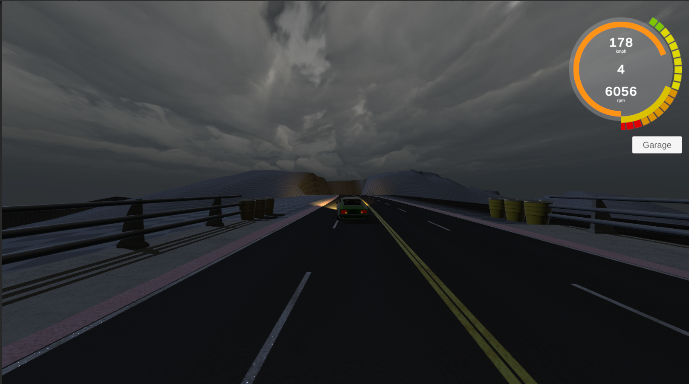


Lost in Escape
Lost in Escape is a puzzle game in which the Player has to solve puzzles to leave the test chamber that they are trapped in and uncover secrets along the way.
I played the role of a designer and programmer in this project. I made the following contributions to this project.
- Interaction System - Object interaction and contextual prompts that appear over objects as player gets closer to them or looks right at them
- Sublevel System Setup - A system that helped create a relatively large team create small sublevels in shared 3D space without causing Source control conflicts
- Level Selection System - A system to select individual levels if the player chooses to play/replay a particular level instead of playing the whole game
- Source Control - Set up, and Managed the source control of the project using GitLab
- Final Level of the Game - Designed and Programmed the final level of the game (Shown in images). Created the logic of all assets needed using blueprints and designed the level layout.
- Build Preparation - Resolved build issues and made sure a proper build was generated in given time
More information about this project can be found here:

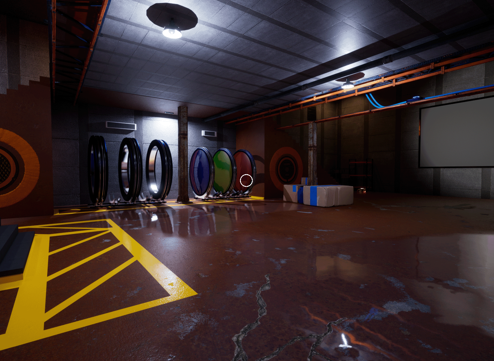

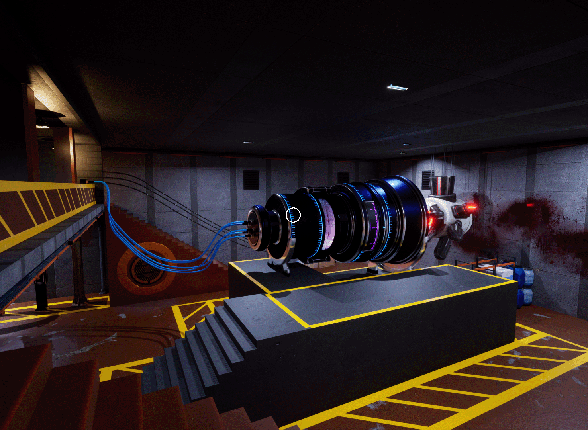
Contact Below
Contact below is a story based Submarine game. The player plays as a Submarine Operator in the ocean of an alien planet. The game explores the genre of Cosmic Horror and Existentialism. The game is being made using Unreal Engine Blueprints.
Said work includes:
- Game Design - This goes over the various decisions regarding the game mechanics and balance. Feature adjustment like noise generation, fish AI behavior, AI response behavior, Submarine functions like propulsion, turning radius, electronic systems, environmental events and so on. All of these details can be seen in the design documentation given below.
- Programming - The programming of the game is done using Blueprints.
- Art - All of the UI art is being creating using a combination of Photoshop and Blender.
- Audio - Recording and Editing various kinds of underwater sounds, submarine and UI interaction sounds for the game.
The objective of this game is to be an intense stealth, strategy and turn based game.
The images on the side are under-development screenshots for the game when the Submarine is in Stealth Mode.
The design documentation and the Repository are given below:
Design Documentation:  Contact Below
Contact Below

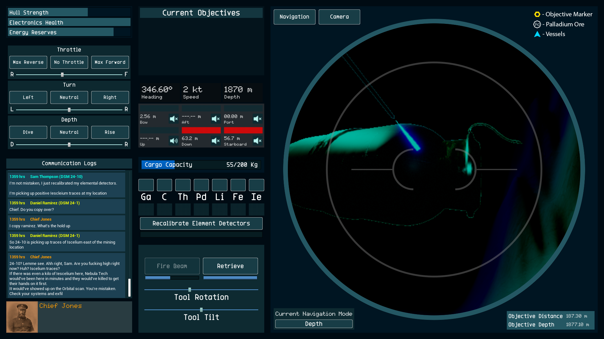

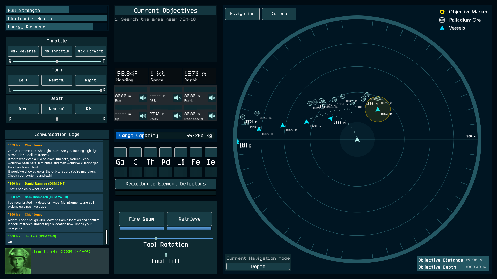

The Loneliest Artist
The Loneliest Artist Revamp will take you on a journey with Charlie as she struggles to control her anxiety due to new changes in her life. Play through special puzzles and mini games to help Charlie accept the change happening around her.
My contributions to this game included:
- A UX rework of the game’s puzzles to increase intuitive readability and reduce explicit prompts to direct/order the player to do certain tasks.
- Recreated certain Level layouts to make it easier for player to interact with items.
The following is a trailer created for the game at the time of being published:


Turtle Racer
Turtle Racing is an educational undersea experience where you speed through an ocean trench and use your knowledge of marine life to reach the finish before your opponent!
I helped create multiple background systems like:
- Question generation - This system pulls random questions and answers from a database that can be edited at any time during the life cycle of a game. Generated questions can then be shown on the screen live as the player progresses through the level
- Race state control - This system dynamically increases or decreases the speed of the opponents to emulate as if the player is indeed racing with a rival/opponent
- Player speed manager - This system increments/decrements player speeds when the player receives buffs/debuffs
- Level streaming - This system essentially tags different level components with unique keywords and loads them in or out depending upon your location in the level to ensure good performance
Following is a trailer for Turtle Racer that showcases gameplay and other elements in this game:

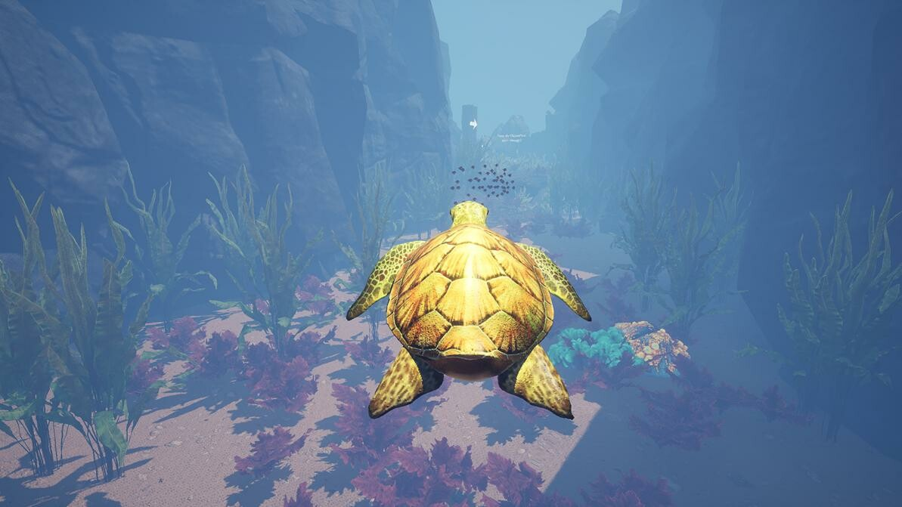

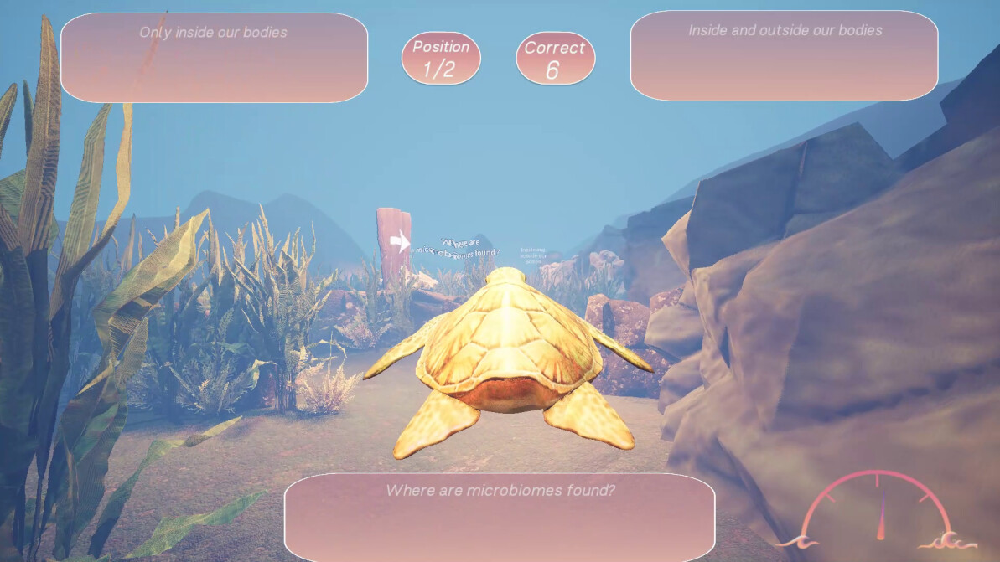

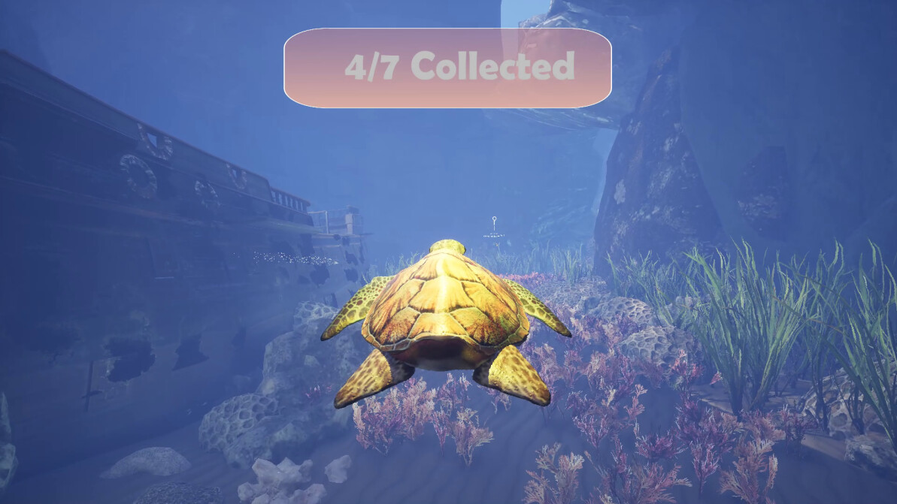

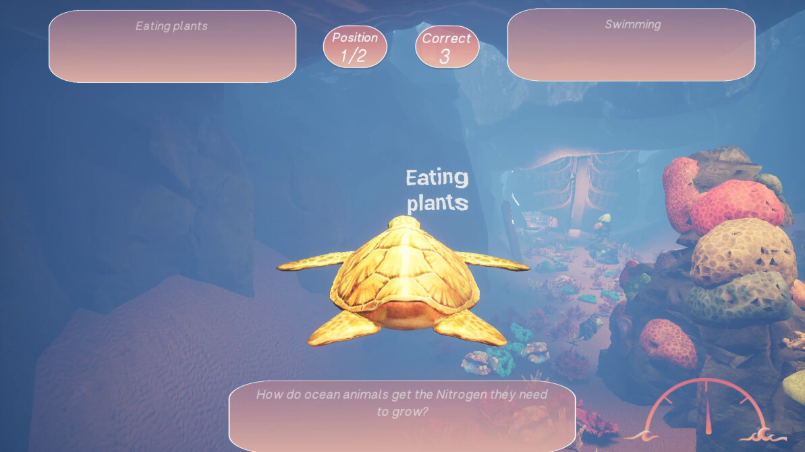

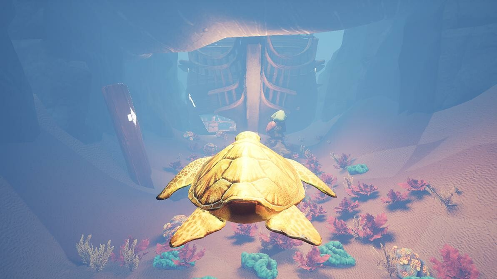
Oyster Matching Card Game
Oyster matching card game is a simple educational game about learning different body parts of an Oyster.
This game is in a card matching game format. It’s an incredibly simple concept with the goal of helping students memorize the anatomy of an Oyster in a fun easy manner.
My contribution to this project was-
- Card Scriptable Objects - Created scriptable objects in Unity that served as a base template for all of the cards of the game.
- Randomization and Distribution - Created the system to randomize the cards and the data inside them to create a new deck of cards each game.
- UI Layout - Created and tested the UI layout to work on multiple android devices.

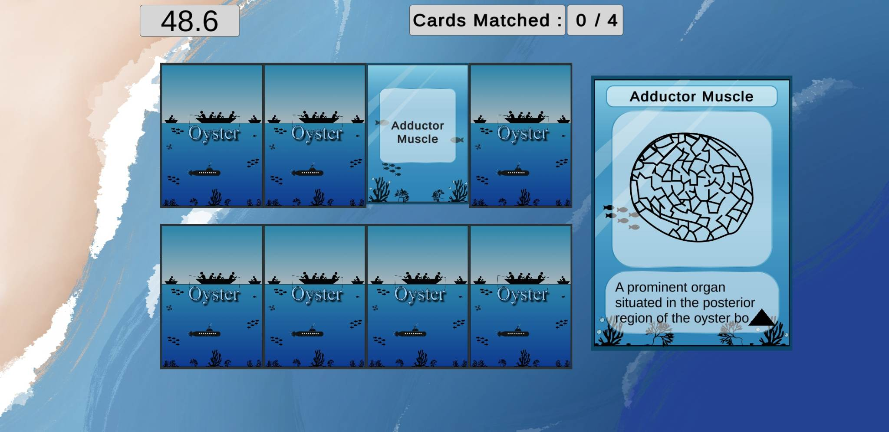

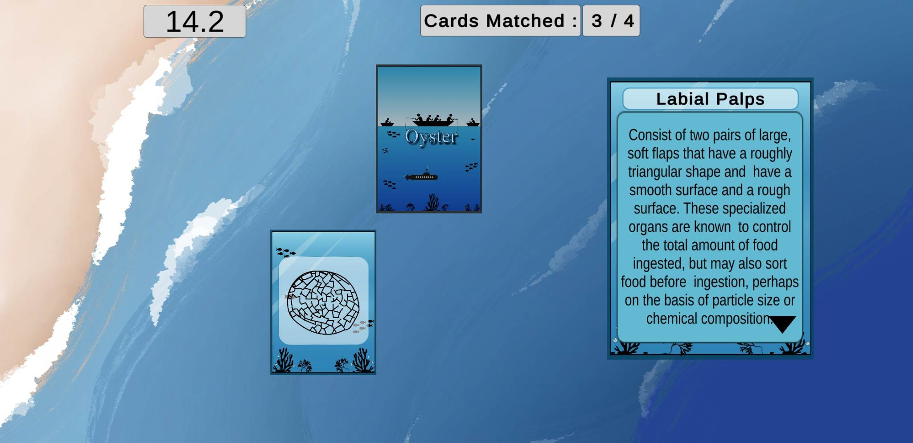

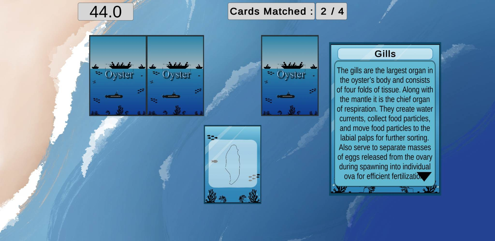
Software Skills
Unreal Engine
Unity Engine
C#
C++
Blender
Discipline Skills
Game Design
Systems Design
Level Design
Game Programming
Documentation
My Email: arshnoor88@gmail.com